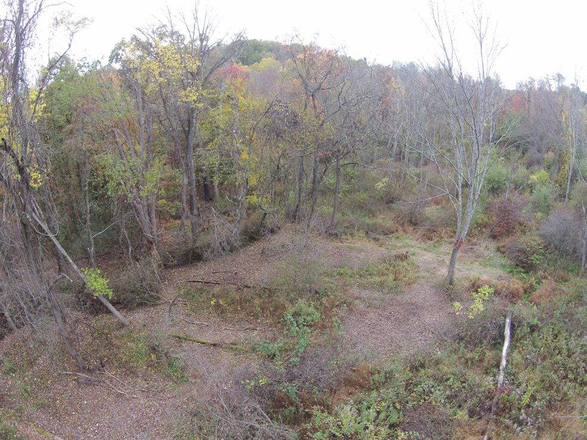

P
VIDEO
Under the canopy
A path appears as we work to uncover native plants from the entanglement of invasive plants. A patch of multiflora rose bushes yet to be removed can be seen in the bottom right corner. The red and orange adolescent sassafras trees in the center of the picture will one day become the new canopy. With every patch of invasive plants managed an opportunity is given for native plants to thrive.
Pockets of sun
At the edge of the work area a dense wall of invasive multiflora rose stands tall just beyond the recently uncovered blackberry patch (bottom center). Dead ash trees have opened the canopy to provide established invasive plants ample sunlight to grow. Without intervention the invasive plants will dominate for years to come.

Sun all day
Planting opportunities abound. A dense region of ash trees died creating this open area with conditions drastically different from under the canopy. Our composting trellis can be seen as a dark patch weaving through the trees in the left center. The space was planted with a variety of native fruiting shrubs and trees. Seeds from native flowering plants were spread prolifically.
Logs on contour
Logs on contour slow water flow mitigating erosion and keeping the hillside fertile. These log swales provide a great place to plant new native trees without the need for continued watering.
Access to apples
As the invasive plants beneath productive apple trees are managed they are placed in tactfully-located compost trellises. These trellises provide protected homes for wildlife and return nutrients back to the soil as they decay.
Deer will take the path of least resistance through the forest. Our trellises alter their routes to prevent root-exposing ruts and erosive pathways straight up and down hills.
{kind=link}

{kind=link}

{kind=link}